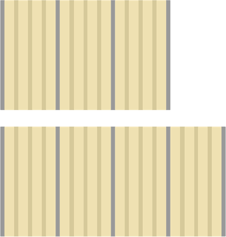

Brief
AMCAS 4 Schools is a new initiative to give Medical Schools greater insight into their student data. This is part of an overhaul of the old platform and this application is one facet of that product strategy. Creating this new application would give the AMCAS team a new revenue stream that was previously not available.
The old platform is out of date and had not been updated since the early 2000s. The platform was used to allow Medical School Deans & Administrators to view reports on their data and to see all student applications. This application will improve upon those reports and allow users to view their data in a dashboard. Users will be able to gleam greater insights through data visualization as well. This solution will not replace the current reports completely but will allow a new channel for those reports to be added [to this application] and updated when the time comes.
AMCAS is a service within AAMC to allow potential medical students to apply to medical schools. They contain multiple products for the application process that aid Students and Medical School Administrators. Currently, all US MD medical schools with the exception of those from Texas and some in California, are part of the AAMC family and utilize the AMCAS services to manage their student applications. This allows for standardization of application forms and processes to lessen the burden for potential students and medical schools.
My Role
In this role, I was the sole UX designer for the entire application. I worked closely with the Product Owners, Business Analyst, Project Manager, and Developers. We held weekly meetings to present designs promised from last week and to discuss any new issues or designs needed for the upcoming week. Besides the weekly meeting I was in consistent collaboration with the team. UX was brought in during the initial requirements phase and we started working on the designs along side requirements gathering in an agile life cycle.
New Global Navigation
For this new application, we had the chance to update and enhance components and patterns. The one component which was not holding up well over time was the Global Navigation. The old Global Navigation was designed with only web in mind and not for products/applications. The navigation did not scale well for large applications.
A major problem with the old design was there was limited space and some applications had many links crowding the navigation. This was difficult to work around as there were other elements in the navigation such as account/login, and the page title.
Old NavigationTo fix this issue I spent time coming up with a new solution for the navigation. The new solution presented was completely vertical and placed on the left side. This vertical navigation allowed for many links to be displayed easily without being cluttered or taking up space that could be dedicated to the main content.
New NavigationAlong with the new vertical navigation there is a horizontal page navigation which includes the login and account info. The horizontal page navigation is made to be transparent so that it does not over shadow the main content which is the most important part.
Tile Cards
Dashboards were a new concept that hadn’t been implemented before into any AMCAS or AAMC products. Since there were no other implementations there came challenges when designing the dashboard. Ultimately, I decided to implement it using tiles. Tiles would allow flexibility in the future for any new dashboard configurations. As one idea came up to allow users to configure their own dashboards. So to accommodate that the Tile Card System was created.
This system is based on a 3 column grid but can be expanded to a 4 column grid. Anything larger or smaller than 3 or 4 columns would not be easily readable by the user. While this system is scalable to smaller sizes such as in mobile it would not be beneficial to the user to see the tiles in such a small screen especially since some of the tiles can be quite large and data visualization does not lend itself to small screens too well.
Home Page / New Notifications
After discussion, it was not practical to land the user on the dashboard right away as some users may not have access to certain reports such as the dashboard. To come up with a solution for this problem, I created a home page. This home page will be useful to give the user information coming up. There is a notification system in the home page which can be updated to give information to the user.

There was a need for data visualization in the home page to show off certain areas of the data that were of interest to the user. So to accommodate that requirement I designed the notifications to include different types including one that allows the user to see an up to date statistic with visualization if necessary. This would allow the user to see relevant data when they need it and not clutter the home page with static data that may or may not be useful. It could be configured to be simple or more complex depending on development efforts.
Drill Down Views
The first report users would most likely see and use would be the Dashboard. This is meant to be a high level overview of all aspects important to medical schools which in the future can be configurable. But for MVP we decided to keep this static. To identify the most important data points we sent out a survey to medical schools to understand their data needs.
The most important data points are displayed in the tiles. The tiles can be clicked on to view more details about the data point. This then will take the user to the next level of drill down to show further details about the data point. Many of the data points on the first level of the dashboard can be broken down further. The first level is only shown counts but the second level in the drill down shows data visualization and further breaks down the data.
Initially the users are only concerned with their numbers and if they are improving or not. If a user notices a trend, they can then view more information by clicking into the tile to view that category of data to understand more.
Showing Data Together (Data Views)
Another feature which allows greater insight for users is to allow them to compare their data against the entire pool of medical school applicants at the national level. This can give them greater insight into how they are doing compared to the average.
This is handled by the view dropdown at the top right corner of the screen which is a multi select. This allows the user to select what they want to show in the data set. This selection is then persisted throughout the entire application.
 Showing only the Schools data
Showing both the Schools data and National data
Showing only the Schools data
Showing both the Schools data and National data
Map
Giving the users many different ways to view data was vital to making this an application users could rely on. Allowing users to view their data in a geographic visualization gave them greater insight into where their students were coming from. This map shows data down the county level. When viewing the county data further data points show up in the tiles below the map.
Different Views of Same Data
The great thing about data visualization is in that viewing the data in different presentations, insights that were not seen before become apparent. For a couple of the reports, I designed them to be viewable in multiple different formats. This was only possible in the reports that did not have the option for data to be compared to the national level. Those reports able to have data represented multiple ways were only static reports and not meant to be used for comparison.
Filters
There are a lot of filters in this application as every data point can be filtered upon. Filtering is an important part of analyzing the data. After sending out a survey to understand what users would want to filter on, we were able to come up with a list to start. Implementation would be difficult to accomplish if all filters were to be included. So based on the survey we were able to identify the top 5 that would be implemented first.

Conclusion
This project is more a proof of concept than a full fledged product. There is still a lot of work to do on this product. Many of the designs and feature were left out to accommodate for MVP. Throughout the project we showed the designs in a clickable prototype to users and received good feedback on the direction. Starting from scratch and beginning in the initial stages of product development was a great learning experience though not without a steep learning curve. The product design had been approved and a working product had been developed for MVP as of September 2018.